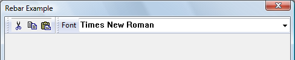

A Rebar control acts as a container for child windows. It can contain one or more bands, and each band can have any combination of a gripper bar, a bitmap, a text label, and one child window. An application assigns a child window—typically another control— to a rebar control band. As you dynamically reposition a rebar control band, the rebar control manages the size and position of the child window assigned to that band. Also, an application can specify a background bitmap for a band, and the rebar control will display the band's child window over the bitmap.
The following screen shot shows a rebar control that has two bands. One contains a toolbar, and the other contains a combobox. Both bands have a gripper that allows them to be moved and resized.

[!Note]
The rebar control is implemented in version 4.70 and later of Comctl32.dll.
Â
An application defines a rebar band's traits by using the RB_INSERTBAND and RB_SETBANDINFO messages. These messages accept the address of a REBARBANDINFO structure as the lParam parameter. The REBARBANDINFO structure members define the traits of a given band. To set a band's traits, set the cbsize member to indicate the size of the structure, in bytes. Then set the fMask member to indicate which structure members your application is filling.
To assign a child window to a band, include the RBBIM_CHILD flag in the fMask member of the REBARBANDINFO structure, and then set the hwndChild member to the child window's handle. Applications can set the minimum allowable width and height of a child window in the cxMinChild and cyMinChild members.
When a rebar control is destroyed, it destroys any child windows assigned to the bands within it. To prevent the control from destroying child windows assigned to its bands, remove the bands by sending the RB_DELETEBAND message, and then use the RB_SETPARENT message to reset the parent to another window before destroying the rebar control.
All rebar control bands can be resized, except those that use the RBBS_FIXEDSIZE style. To resize or change the order of bands within the control, click and drag a band's gripper bar. The rebar control automatically resizes and repositions child windows assigned to its bands. Additionally, you can toggle the size of a band by clicking the band text, if there is any.
If an application is using an image list with a rebar control, it must send the RB_SETBARINFO message before adding bands to the control. This message accepts the address of a REBARINFO structure as the lParam parameter. Before sending the message, prepare the REBARINFO structure by setting the cbSize member to the size of the structure, in bytes. Then, if the rebar control is going to display images on the bands, set the fMask member to the RBIM_IMAGELIST flag and assign an image list handle to the himl member. If the rebar will not use band images, set fMask to zero.
A rebar control forwards all WM_NOTIFY window messages to its parent window. Additionally, a rebar control forwards any messages sent to it from windows assigned to its bands, like WM_CHARTOITEM, WM_COMMAND, and others.
Â
Â